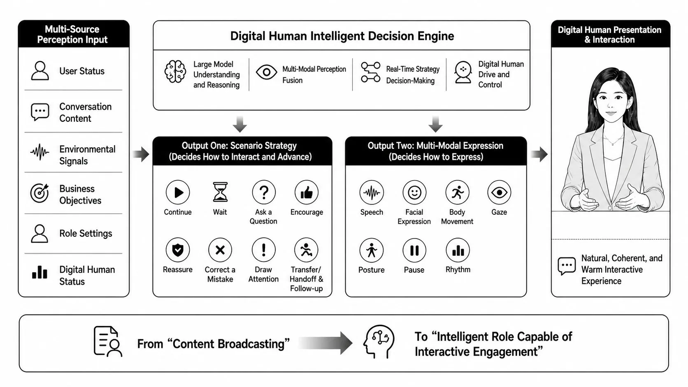

数字人工程解读（一）：CyberVerse：把论文拼成一个能对话的实时数字人

CyberVerse 在 README 里的自我定位是一句话："一个开源的实时数字人 Agent 框架，用 WebRTC、人设记忆、工具、RAG 和可选的数字人视频能力，帮你构建以语音交互为中心的 AI Agent。"#CyberVerse-GitHub
这句话每个词都有分量，但最关键的是它不是一个生成模型。前五篇里 Wav2Lip 解决"对口型"、VASA-1 解决"整脸动力学"——它们都是回答"如何从音频生成一张会动的脸"。而 CyberVerse 回答的是另一个问题：当你已经有了这些模型，如何把它们和大模型、语音识别、推流、记忆拼成一个能实时对话的完整系统？
谁适合读这个项目
如果你的目标是落地一个能看、能听、能实时对话的数字人客服/数字分身/虚拟主播，而不是研究生成算法本身，那么 CyberVerse 是一份极好的工程参考。它把"实时数字人系统"该有的模块边界划得很清楚，而且每个模块都做成可替换的插件——这正是工程落地最关心的东西。
先补齐几个基础词：WebRTC、LiveKit、gRPC、TURN
在进入源码之前，先把后面反复出现的几个工程词对齐。它们不是数字人模型本身，而是让数字人能“实时听、实时说、实时出现在浏览器里”的通信基础设施。
| 术语 | 全称 | 在 CyberVerse 里的意思 |
|---|---|---|
| WebRTC | Web Real-Time Communication | 浏览器原生支持的实时音视频通信技术。用户麦克风音频、数字人返回的视频/音频，最终都要靠 WebRTC 这类低延迟通道传输；它解决的是“浏览器和服务端/房间之间怎么实时通话”。 |
| LiveKit | 产品名，不是缩写 | 一套开源实时音视频基础设施，可以把 WebRTC 房间、音视频轨道、发布订阅和服务器转发封装起来。CyberVerse 里的 server/internal/livekit 就是把数字人的媒体流接进 LiveKit 房间。 |
| SFU | Selective Forwarding Unit | 选择性转发单元。它像一个音视频“中转站”：客户端把音视频发给 SFU，SFU 再转发给需要订阅的人。相比每两端都互相直连，SFU 更适合多人、复杂网络和生产部署。 |
| P2P | Peer-to-Peer | 点对点连接。两个端尽量直接建立 WebRTC 连接，链路短、结构简单，但在 NAT、防火墙或企业内网下更容易连不上。 |
| NAT | Network Address Translation | 网络地址转换。家用路由器、公司内网、运营商网络经常会把内网地址映射成公网出口地址，这会让外部机器很难直接找到你的设备，因此 WebRTC 需要额外的穿透机制。 |
| STUN | Session Traversal Utilities for NAT | NAT 穿透的“探路服务”。它帮助客户端发现自己在公网侧暴露出来的地址和端口，优先尝试让两端直连。 |
| TURN | Traversal Using Relays around NAT | WebRTC 的“兜底中继”。如果 STUN 探路后仍然无法直连，双方就把音视频发到 TURN 服务器，由 TURN 代为转发；它能显著提高连通率，但会增加带宽成本和一点延迟。 |
| gRPC | gRPC Remote Procedure Calls；早期也常被理解为 Google Remote Procedure Call | 后端服务之间的高性能远程调用框架，通常配合 Protocol Buffers 定义接口。CyberVerse 用它连接 Go API Server 和 Python Inference Server，让 Go 像调用本地函数一样调用 Python 里的 ASR、LLM、TTS、Avatar 等推理能力。 |
| Protocol Buffers / proto | Protocol Buffers | Google 设计的结构化数据描述和序列化格式。proto/*.proto 文件就是 CyberVerse 的跨进程接口契约：有哪些服务、方法、请求字段、返回字段，都先写在 proto 里，再生成 Go/Python 代码。 |
这几个词可以按链路分成两类：WebRTC / LiveKit / SFU / STUN / TURN 负责音视频怎么连通，gRPC / proto 负责 Go 编排服务怎么调用 Python 推理服务。也就是说，前者是“实时通话管道”，后者是“AI 服务调用管道”。
理解 CyberVerse 的第一把钥匙，是看清它的进程边界。从 Makefile 可以看到，它要在三个终端分别启动三个服务：#CyberVerse-GitHub
| 进程 | 语言 | 启动命令 | 职责 | 端口 |
|---|---|---|---|---|
| Inference Server | Python | make inference | AI 推理：ASR/LLM/TTS/Avatar/RAG 全部跑在这里 | 50051 (gRPC) |
| API Server | Go | make server | 会话编排、WebRTC 信令、媒体管线、任务状态 | 8080 (HTTP/WS) |
| Frontend | Vue 3 | make frontend | Web UI、推流接收、设置面板 | 5173 |
为什么要拆成三个进程、还用两种后端语言？这是一个非常清醒的工程决策，在它的设计文档（docs/zh-CN/features/2026-05-11-persona-agent-task-mvp.md）里说得很直白：#CyberVerse-Persona-Design
「Go Orchestrator 适合管理 session、WebSocket、Avatar 播放和任务状态，但不适合承载 Python LangGraph 生态。」
也就是说：Go 擅长高并发的连接管理和实时媒体调度，Python 擅长 AI 生态（PyTorch、LangChain、各家模型 SDK）。CyberVerse 没有勉强用一种语言通吃，而是让两边各做擅长的事，中间用 gRPC 连接。
七张 proto 文件：系统的“骨架”
进程之间怎么通信？答案在 proto/ 目录。这里有七个 .proto 文件，其中六个定义 gRPC 服务，另一个 common.proto 定义跨服务复用的 AudioChunk、VideoChunk、ImageFrame 等消息类型。更准确地说：实时主链路依赖 streaming 接口，RAG 与部分管理接口是一元调用。这比笼统说“全部流式”更接近源码本身。#CyberVerse-GitHub
| proto / gRPC 服务 | 关键方法 | 调用形态 | 作用 |
|---|---|---|---|
ASRService | TranscribeStream | stream → stream | 音频流 → 转录事件流 |
LLMService | GenerateStream | req → stream | 请求 → token 流 |
TTSService | SynthesizeStream / ListVoices | stream → stream；管理接口一元 | 文本流 → 音频流，兼顾音色列表查询 |
VoiceLLMService | Converse / Interrupt / CheckVoice | 双向流；管理接口一元 | 语音输入 ↔ 语音输出，支持打断与音色检查 |
AvatarService | GenerateStream / SetAvatar / Reset / GetInfo | stream → stream；管理接口一元 | 音频流 → 视频帧流，兼顾 Avatar 状态管理 |
RAGService | Search / IndexSource | 一元 | 知识库索引与检索 |
common | — | — | 共享消息：AudioChunk / VideoChunk / ImageFrame |
注意 VoiceLLMService 里有一个 Interrupt 方法——这是实时语音体验的灵魂：用户可以在数字人说话时打断它。同时，RAGService 保持一元调用也很合理：知识库索引和检索不是逐帧媒体链路，不必为了“流式”而流式。能不能优雅打断，是“玩具 demo”和“可用产品”的分水岭。
下面这张图把三个进程、六个 gRPC 服务和共享消息契约的关系画出来：
graph TD
subgraph Browser["浏览器 (Vue 3 Frontend :5173)"]
UI["麦克风/摄像头
视频渲染/设置面板"]
end
subgraph GoServer["Go API Server :8080"]
WS["ws.Hub
WebSocket 信令"]
ORCH["orchestrator
会话编排核心"]
MEDIA["livekit / mediapeer
WebRTC 两模式"]
TASK["agenttask
任务状态 (SQLite)"]
ICLIENT["inference.Client
gRPC 客户端"]
end
subgraph PyServer["Python Inference :50051"]
ASRS["ASRService"]
VLLMS["VoiceLLMService"]
LLMS["LLMService"]
TTSS["TTSService"]
AVS["AvatarService"]
RAGS["RAGService"]
end
subgraph Models["数字人后端 models/"]
FH["FlashHead"]
LA["LiveAct"]
end
UI -->|"WebRTC 音视频"| MEDIA
UI -->|"控制信令"| WS
WS --> ORCH
MEDIA --> ORCH
ORCH --> TASK
ORCH --> ICLIENT
ICLIENT -->|"gRPC stream"| ASRS
ICLIENT -->|"gRPC stream"| VLLMS
ICLIENT -->|"gRPC stream"| TTSS
ICLIENT -->|"gRPC stream"| AVS
ICLIENT -->|"gRPC"| RAGS
AVS --> FH
AVS --> LA从代码上可以验证这套装配关系。Go 主入口 server/cmd/cyberverse-server/main.go 几乎就是一份"组件清单"：
// Create WebSocket hub
wsHub := ws.NewHub()
// Create inference gRPC client（连 Python :50051）
inferenceClient, err := inference.NewClient(cfg.Inference.Addr)
// Create LiveKit room manager（SFU 模式）
roomMgr := livekit.NewRoomManager(cfg.LiveKit.URL, ...)
// Create character store（一角色一目录）
charStore, err := character.NewStore(...)
// Agent task store（SQLite 持久化任务 + artifact）
taskStore, err := agenttask.OpenStore(taskDBPath, artifactDir)
// 把全部组件装配进 orchestrator
orch := orchestrator.New(inferenceClient, wsHub, sessionMgr, recorder, charStore, cfg.Pipeline)
可以看到，orchestrator 是 Go 侧的中枢，它持有 gRPC 客户端、WebSocket hub、会话管理器、录制器、角色存储和任务服务的引用，负责把一次对话的所有环节串起来。
尝试解读 orchestrator：它不是业务模块，而是会话总控台
进入 server/internal/orchestrator/orchestrator.go 后，最直观的观感是“文件体量很大”。但它大不是因为它在实现某一个复杂算法，而是因为它站在多个系统边界的交叉点上：浏览器的 WebSocket/WebRTC、Go 侧的 Session、Python 侧的 inference gRPC、角色存储、RAG、录制、任务事件、Avatar 视频流，都要在这里被调度。更准确地说，Orchestrator 不是 ASR、LLM、TTS 或 Avatar 本身，而是决定这些能力什么时候启动、怎么串联、何时打断、结果发给谁的会话总控台。
一个常见误区是：orchestrator.go 没有一个像 main() 那样唯一的业务入口。它更像一个被 API handler、WebSocket handler 和媒体层共同调用的“调度对象”。因此，入口需要按调用层级理解：
| 入口层级 | 对应函数 | 阅读重点 |
|---|---|---|
| 整个 Go 后端启动入口 | server/cmd/cyberverse-server/main.go 里的 main() | 加载配置、创建依赖，然后调用 orchestrator.New(...) 完成总控台装配。 |
| Orchestrator 对象创建入口 | New(...) | 关注它保存了哪些依赖：inference、wsHub、sessionMgr、charStore、recorder 和 pipelineCfg。 |
| 一次会话建立入口 | SetupSession(...) | 关注它如何选择 LiveKit 或 Direct WebRTC，如何设置角色头像，如何启动 AV pipeline。 |
| 文本输入入口 | HandleTextInput(...) | 这是阅读对话逻辑的优先入口，因为它清楚地把 ModeStandard 和 ModeOmni 分开。 |
| 语音输入入口 | HandleAudioStream(...) | 关注麦克风音频如何进入 ASR 或 VoiceLLM。 |
| WebRTC 信令入口 | HandleSignaling(...) | 处理 webrtc_ready、webrtc_answer、ice_candidate 等浏览器信令，不是模型主链路入口。 |
| 会话清理入口 | TeardownSession(...) | 关注它如何取消 pipeline、关闭 peer、停止 silent runtime，并释放 session 资源。 |
因此第一遍读 orchestrator.go，可以只按这条路径走：New → SetupSession → HandleTextInput / HandleAudioStream → runStandardPipeline / runVoiceLLMPipelineWithConfig → TeardownSession。其他函数先当作工具函数或边缘能力：例如 RAG、视觉帧、待机视频、任务事件、录制持久化，等主链路通了再回头看。
可以把 Orchestrator 结构体里的字段分成五组：
| 字段类型 | 代表字段 | 它说明了什么 |
|---|---|---|
| 会话与状态 | sessionMgr、pipelineCfg、streamingMode | 它要知道当前 session 是 standard 还是 omni，媒体走 direct 还是 LiveKit，以及当前 pipeline 是否应该继续。 |
| 前端通信 | wsHub、peers、directPeers | 它负责把状态、错误、任务事件、WebRTC 信令和音视频段发回浏览器。 |
| AI 能力调用 | inference | Go 不直接跑模型，而是通过 inference client 调 Python 的 ASR、LLM、TTS、VoiceLLM、Avatar、RAG。 |
| 业务数据 | charStore、taskService、recorder | 角色人设、头像、知识库、后台任务、录制文件和对话历史都要和会话生命周期绑定。 |
| 实时数字人细节 | avatarMu、silentRuntimes、webrtcAPI、turnServer | 这些字段处理的是工程落地里的硬问题：Avatar 状态互斥、待机推理、NAT 穿透、WebRTC 拥塞控制。 |
再看它的主入口，基本可以分成四条线：
| 入口函数 | 阅读重点 | 对应用户体验 |
|---|---|---|
SetupSession | 创建 LiveKit Bot 或 DirectPeer，设置角色头像，启动 AV pipeline。 | 用户进入会话页后，浏览器和后端建立实时音视频连接。 |
HandleTextInput | 根据 session mode 分流到 standard 文本链路或 omni 文本链路。 | 用户在聊天框打字，数字人生成回答并可能开口说话。 |
HandleAudioStream | 处理麦克风音频；standard 模式走 ASR，omni 模式直接走 VoiceLLM。 | 用户直接说话，系统实时听、实时响应，并支持打断。 |
HandleVisualFrame | 校验 camera/screen JPEG 帧，并存入 session 最近视觉上下文。 | 用户打开摄像头或共享屏幕后，模型可以“看见”最近画面。 |
TeardownSession | 取消 pipeline、关闭 peer、停止 silent runtime、释放 session 资源。 | 用户退出房间后，后端不要继续占用 WebRTC、GPU 或任务资源。 |
其中最值得注意的是它同时维护了两套对话 pipeline。Standard pipeline 是传统串联：ASR → LLM → TTS → Avatar；Omni / VoiceLLM pipeline 则把音频、文本甚至视觉帧一起送进实时语音模型，由模型直接流式吐出文本和音频，再按需驱动 Avatar。源码里的 handleStandardTextInput、runStandardPipeline、runStandardASRLoop 对应前者；handleVoiceLLMTextInput、runVoiceLLMPipeline、wrapVoiceMultimodalInput 对应后者。
flowchart TD
A[用户输入] --> B{Session Mode}
B -->|Standard| C[ASR / 文本输入]
C --> D[LLM 生成文本]
D --> E[TTS 合成音频]
E --> F[Avatar 生成视频]
F --> G[MediaPeer 推送音视频]
B -->|Omni| H[VoiceLLM / PersonaAgent]
H --> I[流式文本 + 音频]
I --> J{Avatar Enabled?}
J -->|是| K[音频驱动 Avatar]
J -->|否| L[纯语音输出]
K --> G
L --> G
G --> M[浏览器播放]这个文件里还有一个非常工程化的细节：voiceAVSyncBuffer。它不是模型能力，而是为了让语音模型输出的 PCM 音频和 Avatar 返回的视频帧按 segment 对齐。它会根据视频帧数、FPS 和采样率计算“这一段视频应该配多少音频采样”，音频不够就补静音，最后一段清尾，避免长对话中音画逐渐漂移。这类代码通常不会出现在论文 demo 里，但会决定产品体验是否稳定。
最后，orchestrator.go 也承担了很多“用户看不见但必须正确”的收尾工作：PersonaAgent 的任务事件要落库并广播，RAG 检索结果要拼进 prompt，角色头像过大要回退默认头像，session 结束要保存对话历史，用户打断时要取消旧 pipeline 并推进 playback epoch。也就是说，它真正管理的是实时交互的生命周期，而不只是“调用模型生成一句话”。
inference/server.py 是“模型能力工厂”，那么 server/internal/orchestrator/orchestrator.go 就是“实时数字人导演”——它决定谁先上场、谁被打断、音视频怎么对齐、结果如何送回用户，以及会话结束后如何收尾。继续下钻 AvatarService：音频如何变成数字人视频帧
理解 Avatar 视频链路时，不能只看 inference/services/avatar_service.py。这个文件是 Python 侧的 gRPC 适配层，真正的模型实现藏在 inference/plugins/avatar/ 下面。完整调用链路是：Go 侧 Orchestrator 决定什么时候需要 Avatar；Go inference client 打 gRPC；Python AvatarGRPCService 接住请求；最后把请求转交给当前注册的 AvatarPlugin，例如 FlashHead 或 LiveAct。
flowchart TD
A[Orchestrator
会话编排] --> B[Go Avatar Client
gRPC 客户端]
B --> C[AvatarService Proto
接口契约]
C --> D[Python gRPC Server
服务注册]
D --> E[AvatarGRPCService
gRPC 适配层]
E --> F[PluginRegistry
获取 avatar 插件]
F --> G[AvatarPlugin
插件抽象]
G --> H[FlashHead / LiveAct
真实视频生成]接口契约定义在 proto/avatar.proto，只有四个方法：SetAvatar、GenerateStream、Reset 和 GetInfo。其中 GenerateStream 是双向流：Go 持续发送 AudioChunk，Python 持续返回 VideoChunk。这就是 Avatar 能被接入实时语音链路的关键——它不是等整段音频结束后再一次性返回视频，而是按 chunk 边生成边返回。
| 层级 | 关键文件 / 函数 | 职责 |
|---|---|---|
| 协议层 | proto/avatar.proto | 定义 SetAvatar、GenerateStream、Reset、GetInfo 四个 gRPC 接口。 |
| Go 客户端 | server/internal/inference/avatar_client.go | 把头像图片、音频 chunk 和 trace metadata 发给 Python inference server，并把返回的视频 chunk 转成 Go channel。 |
| Go 编排层 | server/internal/orchestrator/orchestrator.go | 在设置角色头像、生成 idle video、语音回复驱动 Avatar 时调用 SetAvatar、GenerateAvatar 或 AvatarInfo。 |
| Python 服务注册 | inference/server.py | 通过 avatar_pb2_grpc.add_AvatarServiceServicer_to_server(...) 把 AvatarGRPCService 挂到 gRPC server。 |
| Python 适配层 | inference/services/avatar_service.py | 校验 Avatar 是否启用，读取 gRPC metadata，转换 protobuf 消息，并调用 Avatar 插件。 |
| 模型插件层 | inference/plugins/avatar/base.py | 规定插件必须实现 set_avatar、generate_stream、reset、get_fps、get_output_dimensions。 |
AvatarGRPCService 本身没有直接跑 FlashHead 或 LiveAct 模型。它的核心方法是 _get_plugin()：先检查配置里的 Avatar 开关，如果 inference.avatar.enabled 为 false，就返回 FAILED_PRECONDITION；如果已开启，则从 PluginRegistry 里取出当前 category 为 avatar 的插件。也就是说，这个服务层只负责“接 gRPC、找插件、做格式转换”，不负责具体模型推理。
四个接口可以这样理解：
| gRPC 方法 | avatar_service.py 里的实现 | 工程含义 |
|---|---|---|
SetAvatar | 把请求里的 image_data 写入临时图片文件，然后调用 plugin.set_avatar(image_path, use_face_crop)。 | 为当前 Avatar 后端设置驱动图。Go 侧通常从角色图片目录读取图片，再通过这个接口传给 Python。 |
GenerateStream | 把 gRPC 输入流包装成内部 AudioChunk 异步迭代器，再调用 plugin.generate_stream(audio_stream())，最后把插件返回的 numpy 视频帧序列转成 common_pb2.VideoChunk。 | 这是“音频驱动视频”的主链路：TTS 或 VoiceLLM 产出的音频 chunk 进入 Avatar，返回 RGB 视频帧、fps、chunk index 和 final 标记。 |
Reset | 调用 plugin.reset()。 | 清理 Avatar 插件内部状态，避免上一轮会话的状态污染下一轮。 |
GetInfo | 读取插件名、输出尺寸、fps，并通过 _avatar_frames_per_chunk(...) 估算每个视频 chunk 的帧数和时长。 | Go 侧用它判断 idle video 输出尺寸、Avatar 帧率和音视频同步参数。 |
GenerateStream 还有一个很重要的细节：Go 侧会把 session_id、question_id、reply_id、turn_seq、user_final_unix_ms 放进 gRPC metadata；Python 侧再把这些 trace 字段塞进内部 AudioChunk。如果 Avatar 插件返回了 trace_generation_started_since_user_final_ms，服务会通过 x-cyberverse-trace-flashhead-generation-started-since-user-final-ms initial metadata 回传给 Go。这个设计不是模型必需品，而是工程观测点：它可以记录从用户说完话到 FlashHead 真正开始生成视频之间的耗时。
从实现边界看，avatar_service.py 的价值在于把三种世界隔离开：外部世界看到的是 protobuf 定义的 gRPC 接口；Go 编排层看到的是 SetAvatar 和 GenerateAvatar 这种稳定 client 方法；模型插件只需要实现 AvatarPlugin 抽象。这样一来，FlashHead 换成 LiveAct，或者未来接入另一个数字人后端时，理论上不需要改 Orchestrator 主链路，只要实现同一套插件接口即可。
inference/services/avatar_service.py 不是 Avatar 模型本体，而是 Avatar 的“协议翻译层”——它把 Go 发来的头像图片和音频流翻译成插件接口调用，再把插件生成的视频帧翻译回 gRPC 流。源码路径地图：从入口一路追到能力模块
如果按源码阅读顺序下钻，CyberVerse 不是从模型文件开始读，而是先从运行入口和接口边界开始。推荐路径如下：#CyberVerse-GitHub
| 阅读目标 | 关键路径 | 读到什么 |
|---|---|---|
| 启动方式 | Makefile / scripts/ | 三个服务如何分别启动，哪些环境变量和依赖是必需的 |
| Go 编排入口 | server/cmd/cyberverse-server/main.go | WebSocket、LiveKit、inference client、character store、task store 如何装配进 orchestrator |
| 跨进程接口 | proto/*.proto | ASR、LLM、TTS、Avatar、VoiceLLM、RAG 六个 gRPC 服务，以及 common 共享消息类型 |
| 实时媒体层 | server/internal/livekit / server/internal/mediapeer | SFU 与 P2P 两套 WebRTC 模式，以及 NAT/TURN 处理 |
| Python 推理服务 | inference/server.py | 插件注册、配置加载、gRPC 服务挂载和 Avatar 开关 |
| 插件抽象 | inference/plugins/base.py | 不同模型/供应商如何被统一成可初始化、可关闭、可替换的插件 |
| PersonaAgent | inference/plugins/persona 与相关设计文档 | 前台实时对话如何触发后台任务，而不阻塞语音链路 |
| 前端体验 | frontend/ | 角色选择、设置页、WebRTC 接收与用户交互入口 |
先跑起来：推荐从纯语音模式开始
如果你是第一次读这个仓库，不建议一上来就下载 Avatar 权重、配 CUDA、调 FlashHead 或 LiveAct。更稳的方式是先把纯语音 Agent 跑通：它能验证三进程、WebRTC、gRPC、模型 API key、角色配置和设置页是否工作；等语音链路稳定后，再打开数字人视频后端。#CyberVerse-GitHub
git clone https://github.com/dsd2077/CyberVerse.git
cd CyberVerse
conda create -n cyberverse python=3.10
conda activate cyberverse
cp infra/.env.example .env
cp infra/cyberverse_config.example.yaml cyberverse_config.yaml
然后先在 .env 里填模型供应商 key，例如 DASHSCOPE_API_KEY 或豆包相关的 DOUBAO_ACCESS_TOKEN / DOUBAO_APP_ID。第一次阅读源码时，建议把 cyberverse_config.yaml 改成：
inference:
avatar:
enabled: false
这样系统会退化成纯语音 Agent，不需要本地 Avatar GPU。接下来不要直接启动服务，而是先进入专门的依赖安装章节。
CyberVerse 同时包含 Python gRPC 推理服务、Go API/WebRTC 编排服务和 Vue 前端，任意一侧依赖缺失，后面的源码阅读都会被 ModuleNotFoundError、protoc 或 pkg-config 之类错误打断。因此必须在阅读源码前完成完整的依赖安装与 smoke test。
系统级依赖
这里不要用包管理器的最新版 protobuf 顶替 protoc：当前仓库的 Go proto 生成脚本锁定 libprotoc 29.3，所以安装阶段就应当把 protoc 29.3 放到 PATH 最前面。另一个必须前置的依赖是 npm：make setup 会安装/构建前端依赖，执行前必须确认 node 和 npm 都可用。macOS Apple Silicon 使用 osx-aarch_64 包；Intel Mac 把文件名换成 protoc-29.3-osx-x86_64.zip；Linux x86_64 使用 linux-x86_64.zip。
brew install pkg-config opus opusfile libsoxr ffmpeg node
PROTOC_VERSION=29.3
PROTOC_ZIP=protoc-${PROTOC_VERSION}-osx-aarch_64.zip
curl -LO https://github.com/protocolbuffers/protobuf/releases/download/v${PROTOC_VERSION}/${PROTOC_ZIP}
mkdir -p "$HOME/.local/protoc-${PROTOC_VERSION}"
unzip -o "$PROTOC_ZIP" -d "$HOME/.local/protoc-${PROTOC_VERSION}"
export PATH="$HOME/.local/protoc-${PROTOC_VERSION}/bin:$PATH"
export PKG_CONFIG_PATH="/opt/homebrew/lib/pkgconfig:/opt/homebrew/share/pkgconfig"
node --version
npm --version
go version
protoc --version
ffmpeg -version
pkg-config --modversion opus opusfile soxr
# 1. 安装系统原生依赖
sudo apt-get update
sudo apt-get install -y build-essential pkg-config libopus-dev libopusfile-dev libsoxr-dev ffmpeg unzip curl
# 2. 安装 Node.js LTS（自动附带 npm）
curl -fsSL https://deb.nodesource.com/setup_lts.x | sudo -E bash -
sudo apt-get install -y nodejs
# 3. 配置 Go 国内镜像（服务器在国内时必做，否则 go mod download 会超时）
go env -w GOPROXY=https://goproxy.cn,direct
go env -w GOSUMDB=sum.golang.org
# 4. 安装 protoc 29.3（GitHub release 在国内可能较慢，可配合代理或镜像）
# Ubuntu/Debian 的 protobuf-compiler 会提供 /usr/bin/protoc，版本通常是 3.x；先移除它，避免 PATH 命中旧版本。
sudo apt-get remove -y protobuf-compiler || true
hash -r
PROTOC_VERSION=29.3
PROTOC_ZIP=protoc-${PROTOC_VERSION}-linux-x86_64.zip
curl -LO https://github.com/protocolbuffers/protobuf/releases/download/v${PROTOC_VERSION}/${PROTOC_ZIP}
mkdir -p "$HOME/.local/protoc-${PROTOC_VERSION}"
unzip -o "$PROTOC_ZIP" -d "$HOME/.local/protoc-${PROTOC_VERSION}"
export PATH="$HOME/.local/protoc-${PROTOC_VERSION}/bin:$PATH"
echo 'export PATH="$HOME/.local/protoc-29.3/bin:$PATH"' >> "$HOME/.bashrc"
hash -r
which -a protoc
# 5. smoke test
node --version
npm --version
go version
protoc --version
ffmpeg -version
pkg-config --modversion opus opusfile soxr
项目依赖安装
确认 protoc --version 输出 libprotoc 29.3，并且 node --version、npm --version 都可用后，再安装项目依赖。make setup 会触发前端依赖安装，因此 npm 不是可选项；Python 依赖可以走 uv，也可以走已经创建好的 conda 环境。纯语音链路不只是 LLM 和 TTS：如果配置里启用了 Whisper ASR 插件，还必须安装 asr extra，否则启动 inference/server.py 时会在 import whisper 处报 No module named 'whisper'。因此这里一次性安装 inference、llm、tts、voice_llm、agent 和 asr。
make setup
uv pip install -e ".[inference,llm,tts,voice_llm,agent,asr]"
uv run python -c "import sys; print(sys.executable); print(sys.version)"
uv run python -c "from openai import AsyncOpenAI; import langgraph, aiosqlite, whisper; print('voice deps ok')"
conda activate cyberverse
python -m pip install -U pip setuptools wheel
make setup
python -m pip install -e ".[inference,llm,tts,voice_llm,agent,asr]"
python -c "import sys; print(sys.executable); print(sys.version)"
python -c "from openai import AsyncOpenAI; import langgraph, aiosqlite, whisper; print('voice deps ok')"
如果要开启 Avatar 视频后端，再单独在 Linux + NVIDIA CUDA 环境安装 flash_head extra；macOS 本地阅读和调试不要把 FlashHead 当成必选依赖，否则会被 nvidia-nccl-cu12、xformers 或 CUDA wheel 阻塞。还要注意，FlashHead 源码会直接导入 torch 和 torchvision.transforms；官方 README 对完整数字人视频模式的要求是支持 CUDA 12.8+ 的 GPU，并安装 torch2.8.0、torchvision0.23.0、torchaudio2.8.0 的 cu128 wheel。因此不要随手装一个不匹配的 torchvision，否则很容易在导入阶段遇到 RuntimeError: operator torchvision::nms does not exist。
# macOS 不安装 flash_head；确认 cyberverse_config.yaml 中 inference.avatar.enabled=false
python -c "import platform; print(platform.platform())"
# Linux + NVIDIA CUDA 机器上才执行；官方 README 要求 CUDA 12.8+ 与 PyTorch 2.8
uv pip uninstall -y torch torchvision torchaudio
uv pip install --no-cache-dir torch==2.8.0 torchvision==0.23.0 torchaudio==2.8.0 --index-url https://download.pytorch.org/whl/cu128
uv pip install -e ".[flash_head]"
uv run python -c "import torch, torchvision; print(torch.__version__, torchvision.__version__, torch.cuda.is_available())"
uv run python -c "from loguru import logger; import torchvision.transforms as transforms; print('flash_head deps ok')"
# Linux + NVIDIA CUDA 机器上才执行；官方 README 要求 CUDA 12.8+ 与 PyTorch 2.8
conda activate cyberverse
python -m pip uninstall -y torch torchvision torchaudio
python -m pip install --no-cache-dir torch==2.8.0 torchvision==0.23.0 torchaudio==2.8.0 --index-url https://download.pytorch.org/whl/cu128
python -m pip install -e ".[flash_head]"
python -c "import torch, torchvision; print(torch.__version__, torchvision.__version__, torch.cuda.is_available())"
python -c "from loguru import logger; import torchvision.transforms as transforms; print('flash_head deps ok')"
Avatar 权重下载与路径校验
依赖安装成功只代表 FlashHead 代码能导入；真正启动 Avatar 时还必须准备完整权重目录。官方 README 要求下载 SoulX-FlashHead-1_3B 和 wav2vec2-base-960h，并在 cyberverse_config.yaml 中把 inference.avatar.flash_head.checkpoint_dir、wav2vec_dir 指向本地路径。如果只下载了部分文件，启动时就会出现 FileNotFoundError: ./checkpoints/SoulX-FlashHead-1_3B/VAE_Wan/Wan2.1_VAE.pth 这类错误。
python -m pip install -U "huggingface_hub[cli]"
# 国内服务器可先启用 HF 镜像
export HF_ENDPOINT=https://hf-mirror.com
hf download Soul-AILab/SoulX-FlashHead-1_3B --local-dir ./checkpoints/SoulX-FlashHead-1_3B
hf download facebook/wav2vec2-base-960h --local-dir ./checkpoints/wav2vec2-base-960h
test -f ./checkpoints/SoulX-FlashHead-1_3B/VAE_Wan/Wan2.1_VAE.pth
test -d ./checkpoints/wav2vec2-base-960h
python -m pip install -U modelscope
modelscope download --model Soul-AILab/SoulX-FlashHead-1_3B --local_dir ./checkpoints/SoulX-FlashHead-1_3B
modelscope download --model facebook/wav2vec2-base-960h --local_dir ./checkpoints/wav2vec2-base-960h
test -f ./checkpoints/SoulX-FlashHead-1_3B/VAE_Wan/Wan2.1_VAE.pth
test -d ./checkpoints/wav2vec2-base-960h
inference:
avatar:
enabled: true
default: "flash_head"
flash_head:
checkpoint_dir: "./checkpoints/SoulX-FlashHead-1_3B"
wav2vec_dir: "./checkpoints/wav2vec2-base-960h"
这里的 test -f 是硬校验：如果 Wan2.1_VAE.pth 不存在，不要继续启动 make inference；先重新下载完整的 FlashHead 权重目录，或修正 checkpoint_dir 到真实路径。
如果后续仍然提示 protoc-gen-go 或 protoc-gen-go-grpc 不存在，按 server/go.mod 的 tool 配置安装 Go 插件，或确认 go tool 能找到对应插件。只有依赖安装、权重下载和 smoke test 都通过，后面对 server/internal/orchestrator、inference/plugins、proto/ 的阅读才不是“看到了文件名但没验证入口能不能跑”。
启动服务与基础验证
依赖阶段通过后，再按 Makefile 的入口分别启动三个进程：
# 终端 1：Python gRPC 推理服务
make inference
# 终端 2：Go API / WebRTC 编排服务
make server
# 终端 3：Vue 前端
make frontend
验证时先访问 http://localhost:5173，再用健康检查确认 Go 服务能连上 Python 推理服务：
curl -s http://localhost:8080/api/v1/health
常见报错：protoc not found / version mismatch
如果 make setup 或 make inference 输出 Python proto generation complete 后失败，并提示 ERROR: protoc not found in PATH 或 ERROR: protoc version mismatch for reproducible Go codegen，不要继续往下启动服务，也不要尝试 apt uninstall libprotoc。真正参与代码生成的是当前 shell 里 which protoc 命中的 protoc 二进制；Ubuntu/Debian 上旧版本通常来自 protobuf-compiler 包提供的 /usr/bin/protoc。正确做法是移除这个包、清掉 shell 命令缓存，并把 protoc 29.3 放到 PATH 最前面。
sudo apt-get remove -y protobuf-compiler || true
hash -r
export PATH="$HOME/.local/protoc-29.3/bin:$PATH"
echo 'export PATH="$HOME/.local/protoc-29.3/bin:$PATH"' >> "$HOME/.bashrc"
hash -r
which -a protoc
protoc --version
make setup
which -a protoc 的第一行必须是 $HOME/.local/protoc-29.3/bin/protoc，并且 protoc --version 必须输出 libprotoc 29.3。如果第一行仍然是 /usr/bin/protoc，说明当前 shell 的 PATH 顺序还不对；如果只有新终端不生效，执行 source ~/.bashrc 后再检查。当前脚本会拒绝 libprotoc 3.21.12、libprotoc 35.0 这类非 29.3 版本，以避免生成出来的 Go 代码头部和内容不可复现。
常见报错：No module named 'openai'
如果 make inference 启动时报 ModuleNotFoundError: No module named 'openai'，不要单独 pip install openai。这说明当前终端没有使用安装阶段配置好的同一个 uv 环境，或前面的 editable extras 没有安装成功。应回到安装阶段，用同一个终端和同一个项目环境重新安装完整语音链路依赖：
uv run python -c "import sys; print(sys.executable)"
uv pip install -e ".[inference,llm,tts,voice_llm,agent,asr]"
uv run python -c "from openai import AsyncOpenAI; import langgraph, aiosqlite; print('voice deps ok')"
关键原则是让 uv run make inference、导入检查和 editable 安装使用同一个 Python 环境。不要一边用 uv run 启动服务，一边用裸 pip 往另一个 Python 环境里装包。
常见报错：No module named 'loguru'
如果打开数字人后，make inference 在初始化 avatar.flash_head 时抛出 ModuleNotFoundError: No module named 'loguru'，根因不是 WebSocket、Go Server 或前端问题，而是当前 Python 环境没有安装 FlashHead 后端依赖。loguru 属于项目的 flash_head extra；但要注意，当前 flash_head extra 还硬依赖 nvidia-nccl-cu122.27.3，这个包面向 Linux/CUDA 平台，在 Apple Silicon / macOS 上没有匹配 wheel。因此 macOS 上继续执行 uv pip install -e ".[flash_head]" 会进入依赖求解失败，而不是简单缺一个 loguru。
# 先确认当前平台和 Python 环境
uv run python -c "import platform, sys; print(platform.platform()); print(sys.executable)"
# Linux + NVIDIA CUDA 机器上再安装 FlashHead 后端依赖；官方 README 要求 CUDA 12.8+ 与 PyTorch 2.8
uv pip uninstall -y torch torchvision torchaudio
uv pip install --no-cache-dir torch==2.8.0 torchvision==0.23.0 torchaudio==2.8.0 --index-url https://download.pytorch.org/whl/cu128
uv pip install -e ".[flash_head]"
uv run python -c "import torch, torchvision; print(torch.__version__, torchvision.__version__, torch.cuda.is_available())"
uv run python -c "from loguru import logger; import torchvision.transforms as transforms; print('flash_head deps ok')"
make inference
如果你当前是在 Mac 本地调通 CyberVerse，正确做法是在安装阶段就关闭数字人视频后端，只跑纯语音/Omni/PersonaAgent 链路：把 cyberverse_config.yaml 里的 inference.avatar.enabled 设为 false，并安装 .[inference,llm,tts,voice_llm,agent,asr]。等三进程、DashScope key、WebRTC、LLM/TTS 都稳定后，再把 FlashHead 部署到 Linux + NVIDIA CUDA 的机器上。
uv pip install -e ".[inference,llm,tts,voice_llm,agent,asr]"
uv run python -c "from openai import AsyncOpenAI; import langgraph, aiosqlite; print('voice deps ok')"
make inference
不要在 macOS 上用单独安装 loguru 来“绕过”这个问题，因为后面还会继续遇到 diffusers、xfuser、xformers、nvidia-nccl-cu12 或 CUDA/GPU 相关依赖。这个错误的边界结论是：Mac 适合跑前端、Go Server 和语音链路；FlashHead 实时数字人后端应放到支持 CUDA 的 Linux GPU 环境。
常见报错：operator torchvision::nms does not exist
如果导入 torchvision 时抛出 RuntimeError: operator torchvision::nms does not exist，通常不是 CyberVerse 的业务代码问题，而是当前环境里的 torch 和 torchvision wheel 不匹配，或者混装了 CPU wheel、CUDA wheel、conda 包和 pip 包。torchvision._meta_registrations 在注册 nms 的 fake/meta kernel 时，发现底层 C++/CUDA 扩展里没有对应算子，于是导入阶段直接失败。
# uv 环境：先移除旧 wheel，再按官方 README 的 CUDA 12.8 / PyTorch 2.8 组合成对安装
uv pip uninstall -y torch torchvision torchaudio
uv pip install --no-cache-dir torch==2.8.0 torchvision==0.23.0 torchaudio==2.8.0 --index-url https://download.pytorch.org/whl/cu128
uv run python -c "import torch, torchvision; print(torch.__version__, torchvision.__version__, torch.cuda.is_available())"
# conda + pip 环境：不要混用另一个 Python 的 pip
conda activate cyberverse
python -m pip uninstall -y torch torchvision torchaudio
python -m pip install --no-cache-dir torch==2.8.0 torchvision==0.23.0 torchaudio==2.8.0 --index-url https://download.pytorch.org/whl/cu128
python -c "import torch, torchvision; print(torch.__version__, torchvision.__version__, torch.cuda.is_available())"
官方 README 对完整数字人视频模式写的是 PyTorch 2.8（CUDA 12.8），因此这里固定使用 torch2.8.0、torchvision0.23.0、torchaudio==2.8.0 和 cu128 wheel。修复后再安装 .[flash_head]，并运行 import torchvision.transforms 的 smoke test；如果这一步仍失败，先解决 PyTorch / torchvision 二进制匹配问题，不要继续排查 WebRTC、Go Server 或 Avatar 插件配置。
常见报错：No omni model plugin initialized for provider 'persona'
如果 Go 服务日志里出现 No omni model plugin initialized for provider 'persona'，不要把 persona 当成错误供应商。Go 编排层在 Omni 会话里启用 PersonaAgent 时，会故意把 provider 传成 persona；真正的问题通常是 Python 推理服务没有成功初始化 persona.persona 插件。使用 uv 时，先检查 PersonaAgent 依赖是否可导入：
uv run python -c "import langgraph, langgraph.checkpoint.sqlite, aiosqlite; from inference.plugins.voice_llm.persona_agent import PersonaAgentPlugin; print('persona deps ok')"
如果这里报 No module named 'langgraph'，说明安装阶段没有安装 agent extra，或当前终端没有使用同一个 uv 环境。不要只补一个包；直接重新执行完整语音链路安装和 smoke test：
uv pip install -e ".[inference,llm,tts,voice_llm,agent,asr]"
uv run python -c "import langgraph, langgraph.checkpoint.sqlite, aiosqlite; from inference.plugins.voice_llm.persona_agent import PersonaAgentPlugin; print('persona deps ok')"
make inference
重启后确认 Python 推理服务日志里出现 Initialized plugin: persona.persona。如果仍然失败，再往上翻 make inference 启动日志，通常会有更早的插件初始化异常，例如 DASHSCOPE_API_KEY 缺失、qwen_omni provider 配置缺失，或 PersonaAgent 的底层 model_provider 没有指向具体 Omni provider。
常见报错：AuthenticationError 401 invalid_api_key
如果日志里出现 AuthenticationError、Error code: 401、Incorrect API key provided、invalid_api_key，或 TTS/Omni 日志里出现 server rejected WebSocket connection: HTTP 401，这通常不是源码问题，而是 DashScope / 阿里云百炼 Model Studio 的 API Key 无效、过期、填错，当前进程没有读到正确的环境变量，或者请求打到了不匹配的 DashScope endpoint。CyberVerse 的 qwen、qwen_omni、qwen_tts 和 PersonaAgent 的本地 Qwen LLM 都会读取 DASHSCOPE_API_KEY；如果使用国内百炼服务，还需要显式设置 DASHSCOPE_BASE_URL=https://dashscope.aliyuncs.com/compatible-mode/v1，否则代码默认会走国际站 endpoint。
# 不要把真实 key 打到公开日志里；只检查变量是否存在
uv run python -c "import os; print('DASHSCOPE_API_KEY set:', bool(os.getenv('DASHSCOPE_API_KEY'))); print('DASHSCOPE_BASE_URL:', os.getenv('DASHSCOPE_BASE_URL')); print('DASHSCOPE_WS_URL:', os.getenv('DASHSCOPE_WS_URL')); print('DASHSCOPE_TTS_WS_URL:', os.getenv('DASHSCOPE_TTS_WS_URL'))"
# 国内百炼 / DashScope OpenAI-compatible endpoint；TTS/Omni WebSocket 会从这个 base URL 派生
export DASHSCOPE_API_KEY="sk-..."
export DASHSCOPE_BASE_URL="https://dashscope.aliyuncs.com/compatible-mode/v1"
make inference
如果只想显式指定实时 WebSocket endpoint，也可以设置 DASHSCOPE_WS_URL 作为通用实时地址，或设置 DASHSCOPE_TTS_WS_URL 只覆盖 Qwen TTS。通常不需要手写它们，因为 DASHSCOPE_BASE_URL=https://dashscope.aliyuncs.com/compatible-mode/v1 会自动派生到同域名下的 wss://dashscope.aliyuncs.com/api-ws/v1/realtime。
如果你已经改了 .env、shell 环境变量或 cyberverse_config.yaml，必须重启 make inference，必要时也重启 make server，因为已经启动的 Python 推理服务不会自动读取新的环境变量。还要确认使用的是 Model Studio / DashScope 的有效 key，而不是 OpenAI、GitHub、通义 App Key 或其他平台的 token；如果 key 曾经贴到聊天、日志或公开页面里，应立即在控制台禁用并重新生成。
常见报错：发送失败：网络异常，请稍后重试
这个提示是前端兜底错误，不是根因。代码路径是：前端优先通过 WebSocket 发送 text_input；如果 WebSocket 未连接或发送失败，就 fallback 到 HTTP POST /api/v1/sessions/{id}/message。只有这个 HTTP fallback 也失败时，界面才显示 发送失败：网络异常，请稍后重试。
# 先确认 Go API Server 是否可达
curl -i http://localhost:8080/api/v1/health
# 再打开浏览器 DevTools → Network，查看失败的请求：
# POST /api/v1/sessions/<session_id>/message
如果 Network 里是 404，通常是会话已经失效或前端拿着旧 session_id，刷新页面重新创建会话即可；如果是 500 failed to process message，要看 make server 日志里 Failed to handle text input 后面的真实错误，常见仍然是上游 make inference 的 LLM/TTS/Omni 鉴权、endpoint 或插件初始化失败；如果请求根本发不出去，则优先检查 make server 是否在运行、前端 Vite proxy 是否仍指向 Go 服务，以及 /api/v1/health 是否返回正常。
常见报错：Package soxr / opus / opusfile not found
如果 make server 报 Package soxr was not found、Package 'opus' not found 或 Package 'opusfile' not found，说明安装阶段的原生依赖或 PKG_CONFIG_PATH 没有在当前 shell 生效。回到安装阶段重新安装 Homebrew 依赖，并在启动 make server 的同一个终端导出 PKG_CONFIG_PATH：
brew install pkg-config opus opusfile libsoxr
export PKG_CONFIG_PATH="/opt/homebrew/lib/pkgconfig:/opt/homebrew/share/pkgconfig"
pkg-config --modversion opus opusfile soxr
make server
Apple Silicon 的 Homebrew 通常在 /opt/homebrew；Intel Mac 通常把上面的路径换成 /usr/local/lib/pkgconfig:/usr/local/share/pkgconfig。仓库的 Makefile 默认还会把 CONDA_ENV=$(HOME)/miniconda3/envs/cyberverse 下的 lib/pkgconfig 拼进 PKG_CONFIG_PATH。如果你不用 conda、只用 uv 的 .venv，就不要指望 Python 虚拟环境提供这些 C 库；应使用 Homebrew 或手动设置 CONDA_ENV 指向真正包含 opus.pc、opusfile.pc、soxr.pc 的环境。
阅读顺序建议
把 CyberVerse 当成一个“可运行的源码导览”来读：先跑纯语音模式，确认 make inference、make server、make frontend 三个进程能连起来；再看 proto/*.proto 明确边界；最后才进入 Avatar 后端和 GPU 参数。否则很容易被 CUDA、权重路径和显存问题挡在架构理解之外。
按目标使用代码库：四条入口路径
| 你的目标 | 先改哪里 | 再看哪里 | 判断是否成功 |
|---|---|---|---|
| 只是体验实时语音 Agent | .env + cyberverse_config.yaml，关闭 inference.avatar.enabled | frontend/ 设置页与角色页 | 浏览器能进房间、麦克风输入后有语音回复 |
| 替换 LLM / TTS / ASR 供应商 | cyberverse_config.yaml 的 inference.llm、inference.tts、inference.asr | inference/plugins/ 与 inference/core/registry.py | make inference 启动时插件能初始化，设置页能读到配置 |
| 接入新的数字人视频模型 | inference.plugins.avatar 下新增插件类，并实现统一 Avatar 接口 | proto/avatar.proto、inference/services/avatar_service.py | AvatarService.GenerateStream 能把音频 chunk 转成视频帧流 |
| 做二次开发或嵌入业务系统 | server/internal/api/router.go 和 server/internal/orchestrator | server/internal/livekit / server/internal/mediapeer | 会话创建、消息发送、任务事件和 WebRTC 连接都能被业务侧稳定调用 |
这张路径表也说明了为什么本文把 CyberVerse 称为“系统编排层”：真正值得读的不是某个单点模型，而是入口、接口、媒体、推理、插件、任务状态这些边界如何被组织起来。
现在把镜头拉近，看一次完整的语音对话在系统里怎么流动。这是理解任何实时数字人系统的核心。
sequenceDiagram
participant U as 用户(浏览器)
participant M as WebRTC(Go)
participant O as Orchestrator(Go)
participant V as VoiceLLM/ASR(Py)
participant L as LLM(Py)
participant T as TTS(Py)
participant A as Avatar(Py)
U->>M: 麦克风音频流
M->>O: 音频 chunk
O->>V: TranscribeStream / Converse(stream)
V-->>O: 识别文本 / 语音回复(stream)
O->>L: GenerateStream(对话上下文)
L-->>O: token 流
O->>T: SynthesizeStream(文本流)
T-->>O: 音频 chunk 流
O->>A: GenerateStream(音频 chunk)
A-->>O: 视频帧流
O->>M: 音视频同步推流
M->>U: 数字人开口说话
Note over U,A: 任意环节用户都可触发 Interrupt 打断这条链路里有两条值得注意的设计：
全链路 streaming，不等“整句”
传统的“录音→识别完整句→大模型生成完整答案→合成完整语音→生成完整视频”是串行阻塞的，延迟会累加到好几秒。CyberVerse 的实时主链路把 ASR、LLM、TTS、VoiceLLM、Avatar 都做成 streaming 接口，意味着上游还没说完，下游就能开始处理：LLM 吐出第一个 token，TTS 就能开始合成；TTS 吐出第一个音频 chunk，Avatar 就能开始生成对应的视频帧。这种“边生成边消费”的流水线，是把端到端延迟压到可对话区间的关键。
两种 WebRTC 模式应对不同网络
从 README 和 server/internal/ 的 livekit 与 mediapeer 两个模块可以看到，CyberVerse 支持两种推流模式：
| 模式 | 实现模块 | 适用场景 |
|---|---|---|
| P2P 直连 | mediapeer + 嵌入式 TURN | 单机/内网/SSH 隧道，延迟最低 |
| LiveKit SFU | livekit | 复杂网络、多人、需要穿透 NAT |
main.go 里能看到为 NAT 穿透专门内嵌了一个 TURN-over-TCP 服务器（direct.TURNServer），注释直说是为了 AutoDL、SSH 隧道这类场景——这是很务实的细节，说明作者真的在云 GPU 环境里部署过。#CyberVerse-GitHub
如果只做到上一章，CyberVerse 也就是个"实时语音对话 + 数字人脸"的系统。它真正有意思的设计，是 PersonaAgent + SubAgent 的多 Agent 架构，解决了一个实际矛盾：用户既想要秒回的流畅对话，又想让数字人能做"搜索资料、写报告"这种需要几十秒的重活。
核心洞察：前台对话不能被后台任务阻塞
设计文档把这个矛盾说得很清楚：实时语音链路不能被长任务阻塞。如果用户说"帮我查一下今天的新闻并整理成报告"，系统不能卡住几十秒不说话。#CyberVerse-Persona-Design
CyberVerse 的解法是一套"前台 + 后台"分工：
| 角色 | 位置 | 职责 |
|---|---|---|
| PersonaAgent | Python 前台 | 维持流畅对话、快速响应打断、触发任务 |
| Go TaskService | Go 服务端 | 任务状态中心：SQLite 持久化、事件广播、断线恢复 |
| SubAgent (LangGraph) | Python 后台 | 真正执行搜索、调研、写报告的重活 |
关键设计：PersonaAgent 是编排层，不是模型
这是最容易误解的一点。文档里有一句斩钉截铁的话：
「PersonaAgent 不是模型，而是编排层。它不是 omni 模型本身，而是包装真实 Omni provider 的编排层。」
具体来说，它包装的是阿里的 Qwen Omni Realtime 模型（qwen3.5-omni-flash-realtime），并给这个 Realtime session 注入了一组隐藏工具（hidden tools），通过模型原生的 function calling 来触发后台任务：#CyberVerse-Persona-Design
# PersonaAgent 注入给 Qwen Realtime 的隐藏工具
wait_for_more_input(partial_text, reason) # 用户话没说完，继续等
create_task(user_request, title, kind) # 创建后台任务
get_task_status() # 查询任务进度
cancel_task() # 取消任务
“先确认，后异步启动”的对话节奏
最精彩的是 create_task 的流程设计。它不把后台任务同步阻塞在工具调用里，而是：
graph LR
A["Qwen Omni
触发 create_task"] --> B["回灌 accepted
tool result"]
B --> C["数字人先说
'好的，请稍等'"]
C --> D["异步调 Go
TaskService 建任务"]
D --> E["SubAgent 后台
跑 LangGraph"]
E --> F["结果文本注入
同一 Omni session"]
F --> G["Omni 生成
最终语音回复"]这个"先用一句自然语音确认，再异步干活，干完把结果塞回对话"的节奏，让数字人显得既反应快（立刻回应）又有能力（能完成复杂任务）。这是把 Agent 能力嵌入实时语音对话的一个很值得借鉴的模式。
README 里有一句话概括了 CyberVerse 的可扩展性哲学："大脑、声音、听觉、工具、记忆、脸——全部是可替换的模块。"#CyberVerse-GitHub
这不是一句口号。打开 inference/plugins/base.py，可以看到所有插件都继承自同一个抽象基类：
class CyberVersePlugin(ABC):
name: str = ""
version: str = "0.1.0"
@abstractmethod
async def initialize(self, config: PluginConfig) -> None: ...
@abstractmethod
async def shutdown(self) -> None: ...
任何 ASR、LLM、TTS、Avatar 的具体实现，只要实现这个 initialize / shutdown 接口，就能被注册进系统。而 inference/server.py 里的 PluginRegistry 负责按配置把它们装配起来：
_PLUGIN_CATEGORIES = ("avatar", "llm", "tts", "asr", "omni", "persona", "voice_llm")
# 按 cyberverse_config.yaml 的配置，注册并初始化对应类别的插件
self.registry = PluginRegistry()
配置即架构
这套插件化的直接好处是：换供应商不用改代码，改 YAML 就行。在 cyberverse_config.yaml 里组合不同的 omni 模型、LLM、TTS、ASR、embedding、RAG、工具和 Avatar 后端，再在 Web UI 的 /settings 配各家的 API key。README 里明确支持阿里云 Qwen 系列（DASHSCOPE_API_KEY）和火山引擎豆包系列（DOUBAO_ACCESS_TOKEN）。
数字人视频是“可选后端”
特别值得说的是 Avatar——它在架构里是完全可选的。inference/server.py 里专门有一个 avatar_enabled 开关：
avatar_cfg = self.config.get("inference", {}).get("avatar", {})
self.avatar_enabled = _config_bool(avatar_cfg.get("enabled"), True)
当 inference.avatar.enabled: false 时，平台退化为纯语音 Agent，只推音频流，不需要本地 Avatar GPU，但同样的人设和角色配置继续生效。这对没有 GPU 或还不需要视频形象的场景非常友好——你可以先跑通语音对话，再决定要不要加上"脸"。
CyberVerse 目前内置支持两个数字人视频后端：FlashHead（SoulX-FlashHead-1.3B）和 LiveAct（SoulX-LiveAct 18B），都通过统一的 AvatarService.GenerateStream（音频流 → 视频帧流）接口接入。#CyberVerse-GitHub #SoulX-FlashHead #SoulX-LiveAct
数字人视频最大的工程挑战是实时性——生成一帧的速度必须跟得上播放的速度。CyberVerse 在 README 里给了一个非常实用的度量指标 RTP（real-time performance factor）：#CyberVerse-GitHub
RTP 的定义
其中 elapsed 是生成这批帧实际花的时间，frames / fps 是这批帧按目标帧率播放需要的时长。
判读规则非常直观：
| RTP | 含义 |
|---|---|
| < 1 | 生成比播放快，有实时余量 ✅ |
| = 1 | 刚好实时 |
| > 1 | 生成比播放慢，视频会卡顿、落后 ❌ |
举个 README 里的真实例子：LiveAct 生成 32 帧、目标 20fps，播放时长是 32 / 20 = 1.6 秒；如果实际花了 1.870 秒，那么 RTP = 1.870 / 1.6 ≈ 1.17 > 1，说明在这块 GPU 上跑 320×480@20fps 已经追不上播放了。#CyberVerse-GitHub
硬件门槛：实时数字人视频不便宜
README 给的硬件 benchmark 很坦诚，也印证了我们在系列第五篇"算力选型"里的判断——实时数字人视频的算力门槛相当高：#CyberVerse-GitHub #digital-human-compute-selection
| 模型 | 质量档 | GPU | 卡数 | 分辨率 | FPS | 实时? |
|---|---|---|---|---|---|---|
| FlashHead 1.3B | Lite | RTX 4090 | 1 | 512×512 | 25+ | ✅ |
| FlashHead 1.3B | Pro | RTX 4090 | 1 | 512×512 | ~10.8 | ❌ |
| FlashHead 1.3B | Pro | RTX 5090 | 2 | 512×512 | 25+ | ✅ |
| LiveAct 18B | — | RTX PRO 6000 | 1 | 256×417 | 20 | ✅ |
可以看到：Lite 档单卡 4090 能实时，但要 Pro 级画质就得上双 5090；18B 的 LiveAct 要实时则直接要 RTX PRO 6000 这种专业卡。这条 benchmark 给了一个非常具体的成本锚点——如果你想做"高画质 + 实时"的数字人，硬件预算要按多张高端卡来规划。
不过这张表衡量的是实时，别把它读成"跑得通"的门槛——两件事差得很远。我们在单张 A10（24GB，Ampere）上用官方仓库的 generate.py 加消费级 offload 三件套（--block_offload / --t5_cpu / --offload_cache，纯 bf16、不开任何 FP8）把 LiveAct 18B 完整跑通了：55.5 秒视频 42/42 迭代，显存峰值只有 10.4 GiB，速度 0.8–0.9 FPS #liveact-a10-smoke-2026-09。也就是说 A10 塞得下，只是慢 20 多倍，仅够离线评测。真正的约束反而在主机内存——offload 把主干和 bf16 KV cache 全压到 CPU，稳态要吃 85–90 GiB，实测峰值 113 GiB / 125 GiB，必须整机独占；此前几次中止都是被同机任务挤爆主机内存触发的 OOM-killer，不是 GPU 侧显存不够。A10 上没有 FP8 硬件，官方那条靠 FP8 提速的路径用不了，这才是它跑不快的根因。详细账本和 416×720 竖版的第二次实测见 数字人工程解读（四）：实时数字人模型推理 Benchmark 汇总。
实战经验
当数字人视频卡顿时，先看 inference 日志里的 RTP。如果 RTP > 1，按优先级处理：
它做得好的地方
- 边界划得清楚：三进程 + 六个 gRPC 服务 + common 共享消息契约，把“实时数字人系统”该有的模块拆得干净，每个模块职责单一。
- 语言各尽其能：Go 管并发媒体、Python 管 AI 生态，不强行统一，是务实的选择。
- 实时链路流式：ASR/LLM/TTS/VoiceLLM/Avatar 都围绕 streaming 设计，加上 Interrupt 打断，把实时对话体验做到了“可用产品”级别。
- 插件化彻底：从抽象基类到配置驱动，换模型/换供应商只改 YAML，工程扩展性强。
- 务实的部署细节：嵌入式 TURN、avatar 可关闭退化为纯语音、RTP 度量、多语言 README——能看出在真实云 GPU 环境里打磨过。
局限与复现风险
复现门槛不低
完整跑起来需要 Node 18+、Go 1.25、Conda、Python 3.10+、FFmpeg、libopus/soxr 等系统库，外加三个终端协同。要带视频还得 CUDA 12.8+、PyTorch 2.8、Avatar 权重和高端 GPU。纯语音模式门槛低很多，但"完整数字人"对环境和算力都有硬要求。
GPLv3：商用前必须做法务确认
CyberVerse 使用 GPLv3 协议（仓库根目录 LICENSE，35KB 完整 GPLv3 文本）。GPLv3 是强 copyleft 协议——如果你基于它分发衍生产品，可能被要求以同样的协议开源你的修改和衍生代码。这对想把它直接集成进闭源商业产品的团队是关键约束。在系列第五篇里我们也强调过：不能因为它是好用的实时 Agent 框架就直接纳入闭源产品，商用前必须先做法务判断。相比之下，我们前面提到的 Ultralight-Digital-Human（Apache 2.0）、SadTalker（Apache 2.0）在协议上友好得多。#CyberVerse-GitHub #digital-human-compute-selection
可迁移的工程经验
即便你不直接用 CyberVerse，它的几个设计模式也很值得借鉴到自己的实时 AI 系统里：
- 用 gRPC streaming 契约切分"实时管线"：把 ASR/LLM/TTS/Avatar 定义成统一的流式服务，天然支持"边生成边消费"。
- 前台 Agent + 后台 SubAgent 分工：用"先确认、后异步、再回灌"的节奏，让对话流畅性和复杂任务能力共存。
- 能力插件化 + 配置驱动：抽象统一的插件基类，把"用哪个供应商"从代码下沉到配置。
- 用 RTP 这类单一指标量化实时性：给运维一个可以直接判读、直接行动的健康度量。
落地前检查表
| 检查项 | 为什么重要 | 建议动作 |
|---|---|---|
| 协议 | GPLv3 可能影响闭源商业分发 | 先做法务评估，再决定 fork、隔离服务或仅作参考 |
| 算力 | Avatar 视频实时性受 GPU、分辨率、质量档强约束 | 用 RTP 指标压测，先确认目标分辨率和帧率能否实时 |
| 链路延迟 | ASR、LLM、TTS、Avatar、WebRTC 任一环节都会拖慢首帧 | 分别记录首 token、首音频 chunk、首视频帧和端到端延迟 |
| 打断体验 | 实时语音最怕“用户插话但系统继续说旧答案” | 重点测试 Interrupt、队列清理和 Avatar 状态重置 |
| 降级路径 | 没有 GPU 或视频后端不可用时，系统不能整体不可用 | 保留纯语音 Agent 模式，把 Avatar 做成可关闭能力 |
| 模型供应商 | ASR/LLM/TTS/Omni 都可能有成本、限流和稳定性差异 | 把供应商选择放在配置层，避免写死在业务代码里 |
数字人系列走到这里，我们从最底层的生成算法（Wav2Lip 的唇形同步、VASA-1 的面部动力学），到训练资源、推理成本、benchmark 与产品选型，再到这一篇——一个把所有这些拼成完整系统的开源工程。
CyberVerse 的价值恰恰在于它展示了"最后一公里"长什么样：一个能对话的实时数字人，70% 的工程量不在生成模型本身，而在 WebRTC 推流、流式管线编排、打断处理、Agent 任务调度、插件化、实时性度量这些"系统层"的活。它用一套清晰的 gRPC 微服务架构把这些活组织了起来，是研究者理解"工程落地差距"、工程师参考"系统该怎么搭"的好样本。
唯一需要时刻记在心里的，是那行 GPLv3——技术上它很优秀，但能不能进你的商业产品，先问法务。
参考来源
- CyberVerse. 开源实时数字人 Agent 框架. GitHub: dsd2077/CyberVerse（本文所有架构、代码、配置与 benchmark 均基于对该仓库源码与 README/docs 的实际阅读）
- CyberVerse. PersonaAgent 与后台任务 MVP 设计文档.
docs/zh-CN/features/2026-05-11-persona-agent-task-mvp.md（仓库内） - Soul-AILab. SoulX-FlashHead-1_3B. Hugging Face
- Soul-AILab. SoulX-LiveAct. Hugging Face
- 本系列第八篇. 数字人系列（八）：算力、训练资源与 Benchmark 总结. 站内文章
- LiveAct 18B 单张 A10（24GB，Ampere）offload 路径冒烟实测（2026-09-01 / 2026-09-02，机器独占）：官方仓库
generate.py --block_offload --t5_cpu --offload_cache，纯 bf16、无 FP8 开关；512×512 跑完 42/42 迭代，显存峰值 10.4 GiB、主机内存峰值 113 GiB / 125 GiB、37.6s/迭代 ≈0.8–0.9 FPS；416×720 跑完 43/43 迭代，显存峰值 11.7 GiB、0.67 FPS。两次均为--audio_cfg 1.0（音频 CFG 分支被跳过），唇同步质量不可用于横比。本项目原始实测日志，详见 数字人工程解读（四）。